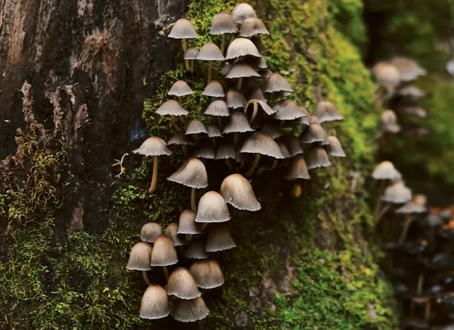
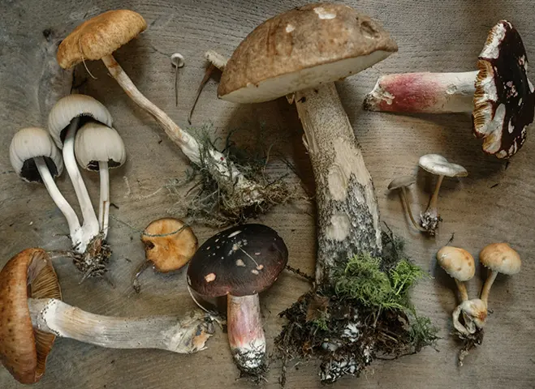
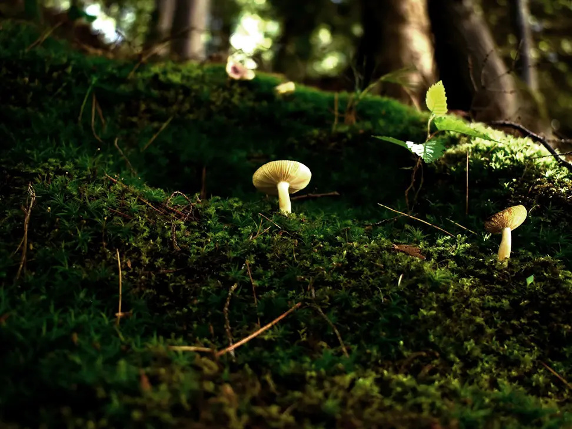

Discover the world of Mushroom Foraging
Mushroom foraging is the art and science of identifying and collecting wild mushrooms.
It's a practice that combines outdoor exploration, botanical knowledge, and culinary adventure. Foragers venture into forests, fields, and even urban green spaces to discover these hidden treasures.
But beware - this hobby requires careful study and respect for nature, as some mushrooms can be dangerous if misidentified.
The joys of mushroom foraging
Foraging for mushrooms can be a rewarding experience for many reasons. People may venture off into the woods to forage for mushrooms because it allows them to connect with nature, enjoy the thrill of the hunt, and savor the satisfaction of finding a hidden culinary treasure.

Outdoor Exploration
Mushroom foraging takes you off the beaten path and into the heart of nature. Learn to read the landscape, identifying prime mushroom habitats from lush forest floors to sun-dappled meadows. Every expedition is a new adventure, with the potential for exciting discoveries around every tree and under every log.

Botanical Expertise
Dive into the intricate world of fungal biology. Discover the unique structures of mushrooms, from caps to gills to spores. Learn to use field guides and identification keys to distinguish between species. With practice, you'll start to see the forest in a whole new light, recognizing the vital role fungi play in ecosystem health.

Culinary Delight
Transform your foraged finds into delectable dishes. Many edible mushrooms offer unique flavors and textures that can elevate your cooking. From the earthy porcini to the delicate chanterelle, each variety brings its own character to the table. Explore recipes, preservation techniques, and the joy of cooking with nature's bounty.
Start your Foraging Adventure!
Whether you're seeking a deeper connection with nature, a new outdoor hobby, or simply love the idea of finding your own food, mushroom foraging offers a uniquely rewarding experience.

Get to know your Mushroom
Successful and safe mushroom foraging begins with a deep understanding of the species you'll encounter in the wild - not just what the edible ones look like, but their toxic look-alikes, seasonal patterns, and preferred habitats.
It can feel like a big task, but we've got a handy reference guide to help you out!
Reference Guide Guide for having a reference aobut the mushrooms.Connect with Nature
Experience the beauty of the great outdoors while foraging for mushrooms with fellow enthusiasts.
Learn More Learn more about the nature of mushrooms.